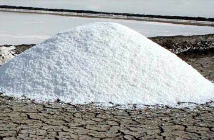

LITTLE RANN OF KUTCH – WILD ASS SANCTUARY
Eco Camp – Jogad (Gujarat) India.
Back To Nature
Salt
Immediately after the monsoon gets over the water in the LRK starts receding into the sea. And by 15 October - 15 November it starts getting dried up and the villagers “Agariya” families, in majority cases including children start moving to the saltpans to prepare their area for making salt. ‘St. Xavier’s Seva Foundation’ an NGO working in the region for the Integral Development and Empowerment of Agariya is working in this field to stop the flight of these children through ‘alternative shift homes’ and supplementary tuition classes etc. From 15 October to 15 April about 6-7 months they remain in the Rann making salt. Mainly “vadagara” crystal land salt is produced here.The state of Gujarat is the major contributor of salt; about 70-80% of the salt produced in the country is produced in Gujarat. While 50% of salt is produced in the sea coastal from Gulf of Kutch to Khambhat, 20% of salt is coming from the LRK.
|  | |


© 2012 - All Rights Reserved to www.littlerann.com Sitemap